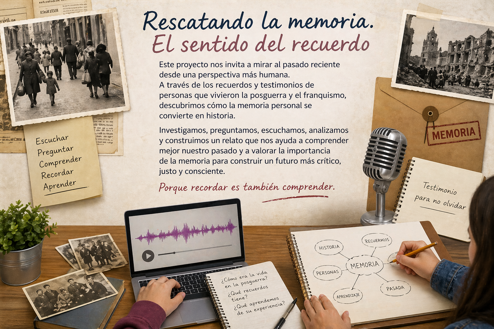

Este recurso digital recoge la situación de aprendizaje “Rescatando la memoria. El sentido del recuerdo”, diseñada para el alumnado de 4.º de ESO en la materia de Geografía e Historia. A través de un enfoque activo e interdisciplinar, el proyecto propone acercarse al estudio de la posguerra española y el franquismo desde una perspectiva más humana, partiendo de los testimonios y recuerdos de personas mayores. El alumnado se convierte así en protagonista de su propio aprendizaje, investigando, entrevistando, analizando y construyendo un relato histórico que conecta la memoria individual con el contexto histórico. Este espacio organiza los contenidos, actividades y recursos necesarios para guiar el proceso de aprendizaje de forma estructurada, fomentando además el desarrollo de la competencia digital, el pensamiento crítico y la reflexión sobre el pasado reciente.
